An introduction to containers using Docker
null puliya by Madhu Akula
3rd June 2017
About Me !
- Automation Ninja at Appsecco
- Fusion of Security, DevOps and Cloud
- Speaker & Trainer at Defcon, All Day DevOps, DevSecCon, etc
- Found bugs in Google, Microsoft, Yahoo, etc
- Never ending learner
- Follow (or) Tweet to me @madhuakula
What you are going to learn?
- What is docker?
- How to use docker commands
- Working with Docker and docker-compose tools
- Creating and running your own container
- Best practices & Tips
- Security Automation use cases
Pre-requisites
- Basics of Linux commands usage
- Laptop with administrative privileges and support for running 64-bit virtual machines
- VirtualBox 5.x
- Minimum 4GB RAM and 15 GB disk space for VM and data
- Internet connection (If you wanted to everything hands-on)
Import virtual machine appliance
- Please import the virtual machine appliance from
null-puliya-docker/docker-training.ova
Start the virtual machine & Login
Username: nel
Password: nulldocker
SSH into VM from host
Windows: Putty
Linux/MAC: SSH client
$ ssh nel@192.168.56.101
History Lesson
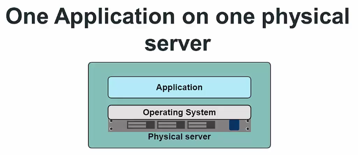
Problems with physical servers
- Slow deployment times
- Huge costs
- Wasted resources
- Difficult to scale
- Difficult to migrate
- Vendor lock in
Hypervisor-based virtualization
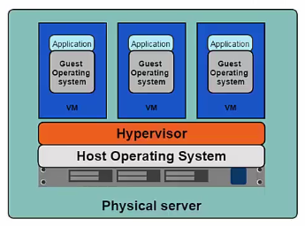
- One physical server can contain multiple applications
- Each application runs in a virtual machine(VM)
Benefits of VMs
- Better resource pooling
- One physical machine divided into multiple virtual machines
- Easier to scale
- VM’s in the cloud
- Rapid elasticity
- Pay as you go mode
- Kernel Security
Limitations of VM’s
- Each VM still requires
- CPU allocation
- Storage
- RAM
- An entire guest operating system
- The more VM’s you run, the more resources you need
- Guest OS means wasted resources
- Applications portability not guaranteed
Introducing Containers
Container based virtualization use the kernel on the host’s operating system to run multiple guest instances
- Each guest instance is called a
container - Each container has its own
- Root File System
- Processes
- Memory
- Devices
- Network ports
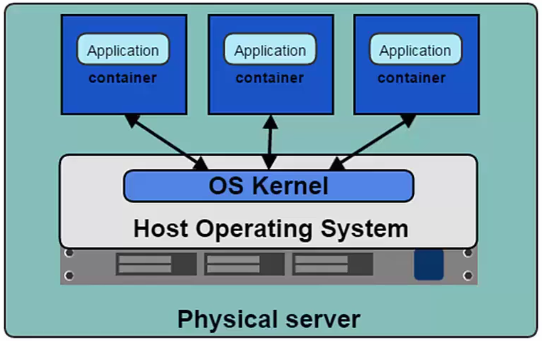
Containers advantages over Virtual Machines
- Containers are more lightweight
- No need to install guest OS
- Less CPU, RAM, Storage space required
- More containers per machine than VMs
- Greater portability
Introducing Docker
Docker containers wrap a piece of software in a complete filesystem that contains everything needed to run: code, runtime, system tools, system libraries – anything that can be installed on a server. This guarantees that the software will always run the same, regardless of its environment.
How Docker Works?
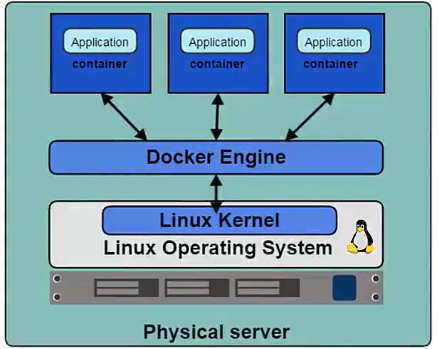
Dockeris the program that enables containers to be built, shipped and run.- Docker Engine uses Linux Kernel namespaces and control groups, Namespaces gives us the isolated workspace (pid, net, ipc, mount, other)
Multiple products/tools
| component | description |
|---|---|
| Docker Engine | Core functions to Docker images to create and start Docker container. |
| Docker Machine | Automated Container Provisioning. |
| Docker Swarm | Allows container clustering and scheduling. |
| Docker Compose | Allows to define multi-container environments and operate. |
| Docker Hub | From Docker Docker operated registry. |
| Docker Trusted Registry | Allows to operate private Docker registries. |
| Docker Cloud | From Docker Docker driven environment. (Build, CI, Deploy) |
| Docker Universal Control Plane | Cluster Management for Docker environments. |
| Kitematic | Simple application for managing Docker containers |
Basics & Terminology
- Docker Image
- Read only with os, libraries and apps
- Docker Container
- Stateful instance of image with a writable layer
- Docker Registry
- Repository of images
- Docker Hub
- Public docker registry
Enough! Let’s start Docker
- Docker is already installed in your VM
- If you want to install https://docs.docker.com/engine/installation/#supported-platforms
Everyone is inside VM?
- Let’s test by running
sudo docker --versioncommand
Why sudo before docker command?
- To run docker commands we need
sudoprivileges. - Add current user to docker group
$ sudo usermod -aG docker nel
SSH again to apply changes
- Now run again the
docker --versioncommand without sudo - Hence, if someone has access to docker group they can have super user privileges (root) : Security**
- We will use this for LAB purpose only
Docker Workflow
- Client / Server architecture
- Client takes user inputs and send them to the daemon
- Daemon build, runs and distributes containers
- Client and daemon can run on the same host or on different hosts
- CLI client and GUI (Kitematic)
Run your first docker container
$ docker run hello-world
docker runcommand send this command to engine- Engine checks if the image available or not
- If it’s not available, it will pull from registry
- If it’s available, it will run the command from local image
Docker containers & Images
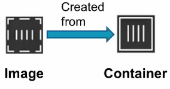
-
Images
- Read only template used to create containers
- Built by you to other Docker users
- Stored in Docker hub or your local registry
-
containers
- Isolated application platform
- Contains everything needed to run your application
- Based on one or more images
Registry & Repository
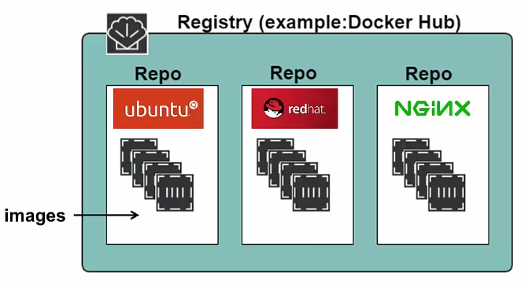
What is Docker Hub?
- Docker Hub is the public registry that contains a large number of images available for your use
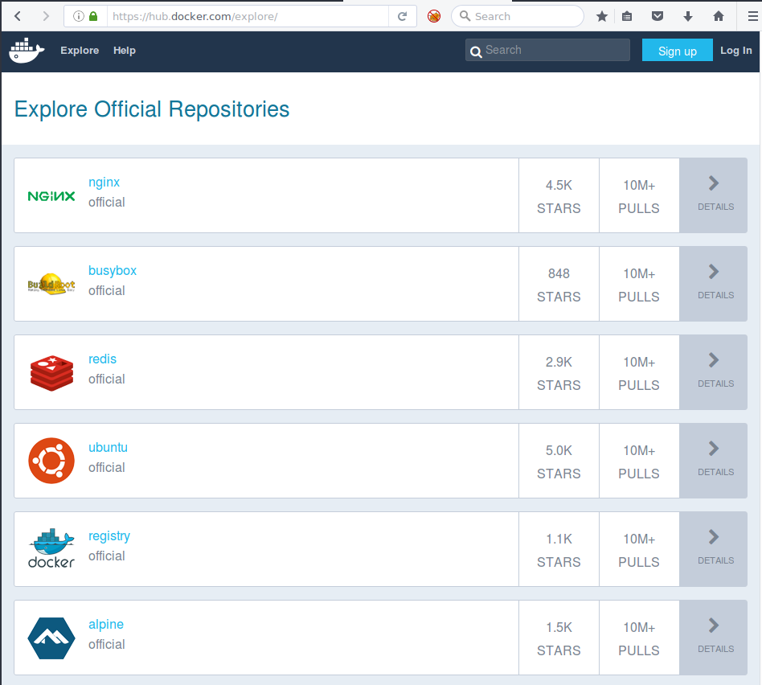
Docker Search
- You can also search through all public available images in docker hub via
$ docker search wpscan
Docker Store
- https://store.docker.com is a Trusted and Enterprise Ready Containers, Plugins, and Docker Editions
How to find local available images
$ docker images
- Images are specified by
repository:tag - The same image may have multiple tags
- The default tag is
latest - Look up the repository on Docker Hub to see what tags are available
Running docker container
$ docker run [options] [image] [command] [args]
- Image is specified with
repository:tag
Example:
$ docker run ubuntu:14.04 echo "Welcome to Ubuntu 14.04"
What’s inside container?
$ docker run ubuntu:14.04 ps ax
Container with Terminal
- Use
-iand-tflags with docker run - The
-iflag tells docker to connect to STDIN on the container - The
-tflag specifies to get pseudo-terminal - Note: You need to run a terminal process as your command (e.g. /bin/bash)
$ docker run -i -t ubuntu:14.04 /bin/bash
Container Processes
- A container only runs as long as the process from your specified
docker runcommand is running - Your command’s process is always
PID 1inside the container
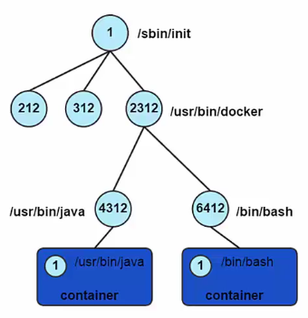
Container Processes Example
$ docker run -it ubuntu bash
root@randomvalue:/# ps -ef
- Exit the container with out closing
Ctrl + P + Q
$ ps -ef
Container ID
- Containers can be specified using their ID or name
- Long ID and short ID
- Short ID and name can be obtained using
docker pscommand to list containers - Login ID obtained by inspecting a container
docker inspect
Naming containers
- You can create specific name for container before running
$ docker run --name sampleapp ubuntu:14.04 uname
Find your containers
- Use
docker psto list running containers - The
-aflag to list all containers (includes containers that are stopped)
$ docker ps
$ docker ps -a
Running in Detached Mode
- Also known as running in the background or as a daemon
- Use
-dflag - To observe output use
docker logs [container id]
$ docker run -d ubuntu:14.04 ping 127.0.0.1 -c 50
$ docker logs [container id]
$ docker logs -f [container id]
Running Docker attach
$ docker run -d --name topdemo ubuntu:14.04 /usr/bin/top -b
$ docker attach topdemo
Running a practical container
- Run a web application inside a container
- The
-Pflag to map container ports(all exposed) to host ports
$ docker run -d -P nginx:alpine
$ docker ps
- Now we can browse to the mapped port in our localhost
- Make a
curlrequest to check
$ curl localhost:mapped port
Running a practical container (contd.)
- To specify certain port for mapping
$ docker run -d -p 3000:80 nginx:alpine
$ curl localhost:3000
- You can also navigate to your browser with host IP address and port
Image Layers
- Images are comprised of multiple layers
- A layer is also just another image
- Every image contains a base layer
- Docker uses a copy on write system
- Layers are read only
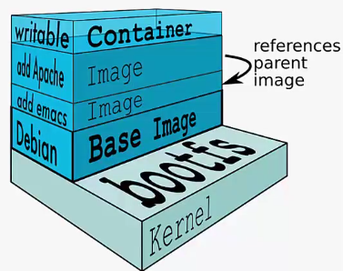
The container writeable layer
- Docker creates a top writeable layer for containers
- Parent images are read only
- All changes are made at the writeable layer
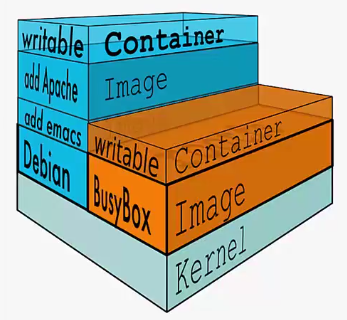
Docker Commit
docker commitcommand saves changes in a container as a new image- Syntax
docker commit [options] [container ID] [repository:tag]
- Repository name should be based on username/application
- Can reference the container with container name instead of ID
Docker Commit (contd.)
$ docker run --name testingcommit -it ubuntu:14.04 bash
# mkdir -p /data/important
# echo "this is important data" > /data/important/credentials.txt
# exit
$ docker ps -a
$ docker commit testingcommit madhuakula/testapp:1.0
$ docker images
Using the new image
$ docker run -it madhuakula/testapp:1.0 bash
# cat /data/important/credentials.txt
Introducing Dockerfile
A
Dockerfileis a configuration file that contains instructions for building a Docker image
- Provides a more effective way to build images compared to using
docker commit - Easily fits into your continuous integration and deployment process
Dockerfile instructions
- Instructions specify what to do when building the image
FROMinstruction specifies what the base image should beRUNinstruction specifies a command to execute
# Example of a comment
FROM ubuntu:14.04
RUN apt-get update
RUN apt-get install curl -y
RUN apt-get install htop -y
More about RUN instruction
- Each
RUNinstruction will execute the command on the top writeable layer and perform a commit of the image - Can aggregate multiple
RUNinstructions by using&&
RUN apt-get update && apt-get install -y \
curl \
htop
Docker Build
docker build [options] [path]
- Common option to tag the build
docker build -t [repository:tag] [path]
Example:
# Build an image using current folder as context path
$ docker build -t madhuakula/testimage:1.0 .
# Build an image using `myproject` folder as context path
$ docker build -t madhuakula/testimage:1.0 myproject
- By default it looks for the
Dockerfile - You can specify the different file using
-fflag
Exercise
$ mkdir first_image_build
$ cd first_image_build
- Create a Dockerfile using
vi Dockerfile
FROM ubuntu:14.04
RUN apt-get update
RUN apt-get install -y curl
RUN apt-get install -y nmap
- Then run the docker build command
$ docker build -t madhuakula/testimage:1.0 .
Exercise (contd.)
- Verify by running the
docker imagescommand
$ docker images
- Modify the Dockerfile using
vi Dockerfile
FROM ubuntu:14.04
RUN apt-get update && apt-get install -y \
curl \
vim
- Run the docker build command again
$ docker build -t madhuakula/testimage:1.1 .
CMD Instruction
- CMD defines a default command to execute when a container is created
- CMD performs no action during the image build
- Shell format and EXEC format (JSON array)
- Can only be specified once in a Dockerfile
- Can be overridden at run time
Shell format
CMD ping 127.0.0.1 -c 30
Exec format
CMD ["ping", "127.0.0.1", "-c", "30"]
Example
- Modify the Dockerfile using
vim Dockerfile
FROM ubuntu:14.04
RUN apt-get update && apt-get install -y \
curl
CMD ["ping", "127.0.0.1", "-c", "10"]
- Run the docker build command again
$ docker build -t madhuakula/testimage:1.2 .
- Check the CMD by running docker image
$ docker run madhuakula/testimage:1.2
- Override the CMD instruction
$ docker run madhuakula/testimage:1.2 echo "hello world"
ENTRYPOINT Instruction
- Defines the command that will run when a container is executed
- Run time arguments and CMD instruction are passed as parameters to the ENTRYPOINT instruction
- Shell and EXEC form
- EXEC form preferred as shell form cannot accept arguments at run time
- Container essentially runs as an executable
ENTRYPOINT ["ping"]
Example
- Modify the Dockerfile using
vim Dockerfile
FROM ubuntu:14.04
RUN apt-get update && apt-get install -y \
curl
ENTRYPOINT ["ping"]
- Run the docker build command again
$ docker build -t madhuakula/testimage:1.3 .
- Check the ENTRYPOINT by running docker image
$ docker run madhuakula/testimage:1.3
$ docker run madhuakula/testimage:1.3 127.0.0.1 -c 5
Managing Images and Containers
Start and Stop Containers
- Find your containers with
docker psand note the ID or name docker startanddocker stop
List all containers
$ docker ps -a
Start a container using the container ID
$ docker start <container ID>
Stop a container using the container ID
$ docker stop <container ID>
Example
$ docker run --name samplenginxapp -d nginx:alpine
$ docker ps
$ docker stop samplenginxapp
$ docker ps
$ docker ps -a
$ docker start samplenginxapp
Getting terminal access
- Use
docker execcommand to start another process within a container - Execute
/bin/bashto get a bash shell (or)/bin/sh
docker exec -i -t [container ID] /bin/bash
- First run a container
$ docker run --name nginxapp -d nginx:alpine
- Exiting from the terminal will not terminate the container
$ docker exec -it nginxapp /bin/sh
Deleting Containers
- Can only delete containers that have been stopped
- Use
docker rmcommand - Specify the container ID or name
Example
$ docker run --name anotherapp -d nginx:alpine
$ docker ps
$ docker stop anotherapp
$ docker ps -a
$ docker rm anotherapp
$ docker ps -a
Deleting local images
docker rmi [image ID]
(or)
docker rmi [repo:tag]
- If an image is tagged multiple items, we have to remove each tag
Example
$ docker images
$ docker rmi madhuakula/testimage:1.1
$ docker images
$ docker rmi f26a6ce913b7
$ docker images
Docker Hub Repositories
- Users can create their own repositories on Docker Hub
- Public and Private
- Push local images to a repository
Pushing images to Docker Hub
docker push [repo:tag]
- Local repo must have same name and tag as the Docker Hub repo
$ docker push madhuakula/testingimage:1.0
Tagging Images
- Used to rename a local image repository before pushing to Docker Hub
docker tag [image ID] [repo:tag]
OR
docker tag [local repo:tag] [Docker Hub repo:tag]
Examples:
$ docker tag f26a6ce913b7 madhuakula/testexample:1.0
OR
$ docker tag madhuakula/testimage:1.1 madhuakula/testanotherexample
Volumes
A volume is a designated directory in a container, which is designed to persist data, independent of the container’s life cycle
- Volume changes are excluded when updating an image
- Persist when a container is deleted
- Can be mapped to a host folder
- Can be shared between containers
Mount a Volume
- Volumes are mounted when creating or executing a container
- Can be mapped to a host directory
- Volume paths specified must be absolute
Execute a new container and mount the folder /myvolume into it's file system
$ docker run -d -P -v /myvolume nginx:alpine
Execute a new container and map the /data/src folder from the host into the /test/src folder in the container
$ docker run -i -t -v /data/src:/test/src nginx:alpine sh
Volumes in Dockefile
- VOLUME instruction creates a mount point
- Can specify arguments JSON array or string
- Cannot map volumes to host directories
- Volumes are initialized when the container is executed
# string example
VOLUME /myvol
# string example with multiple volumes
VOLUME /www/website1.com /www/website2.com
# JSON example
VOLUME ["myvol", "myvol2"]
Use of volumes
- De-couple the data that is stored from the container which created the data
- Good for sharing data between containers
- Can setup a data containers which has a volume you mount in other containers
- Mounting folders from the host is good for testing purposes but generally not recommended for production use
Docker Networking
Mapping Ports
- Recall: containers have their own network and IP address
- Map exposed container ports to ports on the host machine
- Ports can be manually mapped or auto mapped
- Uses the
-pand-Pparameters indocker run
Map port 80 on the container to 8080 on the host
$ docker run -d -p 8080:80 nginx:alpine
Auto mapping ports
- Use the
-Poption indocker run - Automatically maps exposed ports in the container to a port number in the host
- Host port numbers used to go from
49153to65535 - Only works for ports defined in the
EXPOSEinstruction
Auto map ports exposed by the NGINX container to a port value on the host
$ docker run -d -P nginx:alpine
Linking Containers
Linking is a communication method between containers which allows them to securely transfer data from one to another
- Source and recipient containers
- Recipient containers have access to data on source containers
- Links are established based on container names
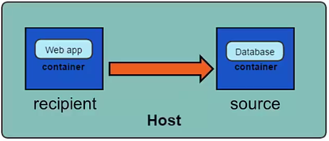
Creating a Link
- Create the source container first
-
Create the recipient container to use
--linkoption -
Best practice - give your containers meaningful names
Create the source container using the postgres
$ docker run -d --name database mysql:5.7
Create the recipient container and link it
$ docker run -d -P --name website --link database:db nginx:alpine
- check
/etc/hostsofwebsitecontainer for more reference
$ docker run -it website sh
# cat /etc/hosts
Uses of Linking
- Containers can talk to each other without having to expose ports to the host
- Essential for micro service applications architecture
- Example:
- Container with Tomcat running
- Container with MySQL running
- Application on Tomcat needs to connect to MySQL
Docker logs
$ docker logs -f --tail 2 <Container NAME>
Inspecting a Container
$ docker inspect <container name>
OR
$ docker inspect <container name> | grep IPAddress
OR
$ docker inspect <container name> | jq .
Docker history
docker history [OPTIONS] IMAGE
$ docker history nginx:alpine
Docker Diff
List the changed files and directories in a containers filesystem There are 3 events that are listed in the diff:
- A - Add
- D - Delete
- C - Change
For example:
$ docker run --name checkingimage -it ubuntu:14.04 bash
# mkdir -p /data/output
# echo "modifed this stuff" > /.dockerenv
# exit
$ docker diff checkingimage
Docker stats
- You can get stats from containers using
$ docker run --name statstest -d nginx:alpine
$ docker run -d nginx:alpine
$ docker ps
$ docker stats statstest
$ docker stats --all
Docker top
docker top CONTAINER [ps OPTIONS]
Example:
$ docker run --name toptestcontainer -d nginx:alpine
$ docker top toptestcontainer
Traditional Continuous Integration
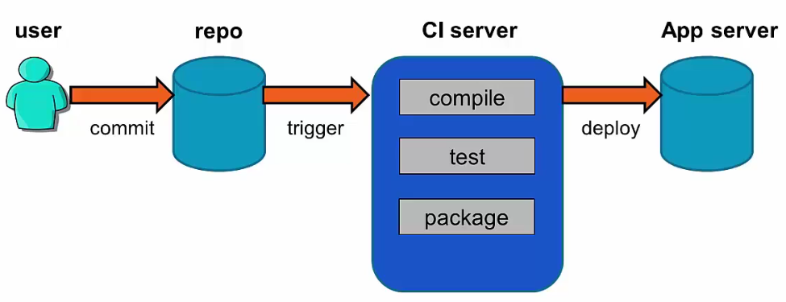
Using Docker in CI
- CI server builds Docker image and pushes into Docker Hub
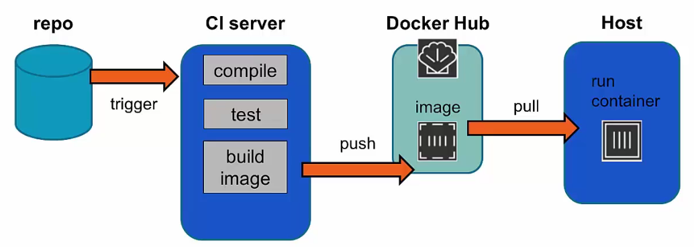
Docker Hub Auto Build
- Docker Hub detects commits to source repository and builds the image
- Container is run during image build
- Testing done inside container
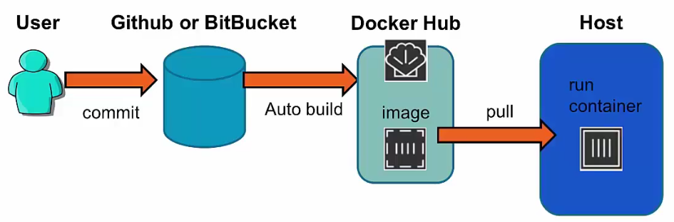
Example
- Login to your Github account
- Create a new repository
null-docker-puliya-test - Add a
Dockerfilein that repository
FROM ubuntu:16.04
MAINTAINER Madhu Akula <madhu.akula@hotmail.com>
RUN apt-get update && apt-get install curl \
htop -y
- Login to your Dockerhub account and create automated build
- Link your github and select the github repository
null-docker-puliya-test - Then give the details and trigger build.
Example (contd.)
- Update the Dockerfile in Github
FROM ubuntu:16.04
MAINTAINER Madhu Akula <madhu.akula@hotmail.com>
RUN apt-get update && apt-get install curl \
nmap htop
ENTRYPOINT ["ping"]
- Now check your Dockerhub, it will automatically trigger the new build
Docker Private Registry
- Docker Registry can be available as a Docker container
registry:2 - Create a directory in host system
mkdir -p /tmp/localregistrydata, which we will mount inside the registry container as volume. - This volume will contain all the registry data.
$ docker run -d -p 5000:5000 -v /tmp/localregistrydata-data:/var/lib/registry
registry:latest
Pushing Images to Private Registry (Demo)
- Tag an image before pushing
$ docker tag <image_id> localhost:5000/newimage
- Push to the registry
$ docker push localhost:5000/newimage
- Pulling the image from private registry
$ docker pull localhost:5000/newimage
Docker Networking Drivers
- All apps are differently designed. Some of them required additional access like wordpress with mysql
- So Docker networking will play key role in working with multiple containers
Docker Networking (Link Example)
- We have already seen
--linkcommand flag
$ docker run -d --name netcontainer1 alpine sleep 1000
$ docker run --name netcontainer2 --link netcontainer1 -i -t alpine /bin/sh
- The netcontainer2 will be able to ping netcontainer1 using its name, which is
netcontainer1
Docker Networking Drivers (contd.)
- By default, Docker installation create three networks
- None (gets no network connection, good for security stuff)
- Host (inside the container would be identical to the hosts, like network interface names and ip addresses.)
- Bridge (by default, allows containers in the same bridge network to
access to each other. It spans within the host system)
- Overlay network is the most commonly used in networking. (access
between containers running in different hosts. It requires a key-value store like etcd, consul (or) zookeeper)
Docker Bridge Network Example (ISOLATION)
- Creating bridge network
$ docker network create --driver bridge different_network
- Running container in this bridge network
$ docker run --name bridgecontianer --network=different_network -d -i -t alpine /bin/sh
- Run another container with default bridge network and ping
bridgecontianer
$ docker run -it alpine /bin/sh
# ping bridgecontianer
Docker Logging
- Docker supports different logging methods for storing and shipping
logs. - Default the messages are written as a json
- Here are some of them in many drivers docker support, json-file, syslog, journald, gelf, fluentd, splunk.
Writing Awesome Dockerfiles
- .dockerignore
- FROM Sets the Base Image for subsequent instructions.
- MAINTAINER (deprecated - use LABEL instead) Set the Author field of the generated images.
- RUN execute any commands in a new layer on top of the current image and commit the results.
- CMD provide defaults for an executing container.
Writing Awesome Dockerfiles (contd.)
- EXPOSE informs Docker that the container listens on the specified network ports at runtime. NOTE: does not actually make ports accessible.
- ENV sets environment variable.
- ADD copies new files, directories or remote file to container. Invalidates caches. Avoid
ADDand useCOPYinstead. - COPY copies new files or directories to container. Note that this only copies as root, so you have to chown manually regardless of your USER / WORKDIR setting. See https://github.com/moby/moby/issues/30110
Writing Awesome Dockerfiles (contd.)
- ENTRYPOINT configures a container that will run as an executable.
- VOLUME creates a mount point for externally mounted volumes or other containers.
- USER sets the user name for following RUN / CMD / ENTRYPOINT commands.
- WORKDIR sets the working directory.
- ARG defines a build-time variable.
Writing Awesome Dockerfiles (contd.)
- ONBUILD adds a trigger instruction when the image is used as the base for another build.
- STOPSIGNAL sets the system call signal that will be sent to the container to exit.
- LABEL apply key/value metadata to your images, containers, or daemons.
Docker Compose
- Docker Compose is a tool to define and run multi container applications
- It contains Dockerfiles, images, environment variables, volumes, ports, etc.
- It’s written in YAML format
Features
- Multiple isolated environments on a single host
- Preserve volume data when containers are created
- Only recreate containers that have changed
- Variables and moving a composition between environments
Docker Compose usage
- Define your app’s environment with a
Dockerfileso it can be reproduced anywhere. - Define the services that make up your app in
docker-compose.ymlso they can be run together in an isolated environment. - Lastly, run
docker-compose upand Compose will start and run your entire app.
Docker Compose Example Overview
version: '3'
services:
web:
build: .
ports:
- "5000:5000"
volumes:
- .:/code
- logvolume01:/var/log
links:
- redis
redis:
image: redis
volumes:
logvolume01: {}
Docker Compose Wordpress Example
- Create a new directory
mkdir composewordpressandcd composewordpress - Create
vi docker-compose.ymlfile
version: '3'
services:
db:
image: mysql:5.7
volumes:
- db_data:/var/lib/mysql
restart: always
environment:
MYSQL_ROOT_PASSWORD: somewordpress
MYSQL_DATABASE: wordpress
MYSQL_USER: wordpress
MYSQL_PASSWORD: wordpress
wordpress:
depends_on:
- db
image: wordpress:latest
ports:
- "8000:80"
restart: always
environment:
WORDPRESS_DB_HOST: db:3306
WORDPRESS_DB_USER: wordpress
WORDPRESS_DB_PASSWORD: wordpress
volumes:
db_data:
Running docker-compose
- Run
docker-compose up -d db - Wait for a minute to start the database and configuration
- Then run
docker-compose up -d wordpress - Now browse to
http://hostIP:8000in your browser
Check compose status
$ docker-compose ps
$ docker ps
How about scaling stuff?
$ docker-compose scale wordpress=3
$ docker-compose ps
Security Automation use cases
- Let’s run our
wpscanagainst running wordpress site
$ docker run -it --rm wpscanteam/wpscan -u http://YOURHOSTIP:8000
Security Automation use cases (contd.)
- How long does it take you to setup vulnerable application?
$ docker run --name dsvw -p 5000:8000 -d appsecco/dsvw
- Navigate to
http://YOURHOSTIP:5000in your browser
Security Automation use cases (contd.)
- There are many more use cases and containers already available
- Exploits (https://hub.docker.com/r/vulnerables)
- Vulnerable Apps (https://hub.docker.com/u/owasp/)
- Kali Linux (https://hub.docker.com/r/kalilinux/kali-linux-docker/)
- OWASP ZAP (https://hub.docker.com/r/owasp/zap2docker-stable/)
- Many more
Security Automation use cases (contd.)
- Adding security into DevOps pipeline using containers
- Setting up & Building vulnerable labs
- Isolated test environment (kind of sandbox)
- Many more.
Security Automation use cases (contd.)
What do you think of Docker, Any use cases?
Docker Swarm
The cluster management and orchestration features embedded in the Docker Engine are built using SwarmKit.
A swarm is a cluster of Docker engines, or nodes, where you deploy services. The Docker Engine CLI and API include commands to manage swarm nodes (e.g., add or remove nodes), and deploy and orchestrate services across the swarm.
Docker Swarm Features
- Cluster management integrated with Docker Engine
- Decentralized design
- Declarative service model
- Scaling
- Desired state reconciliation
- Multi-host networking
- Service discovery
- Load balancing
- Secure by default
- Rolling updates
Popular Alternatives for Docker Swarm
- Kubernetes aka k8s
- Apache Mesos and Marathon
- Nomad
- DC/OS
- Many more.
The easiest way to manage docker (Portainer)
Portainer is an open-source lightweight management UI which allows you to easily manage your Docker host or Swarm cluster.
Running Portainer
- It’s as simple as running the below command
$ docker run --name portainer -d -p 9000:9000 -v "/var/run/docker.sock:/var/run/docker.sock" portainer/portainer
Auto completion of docker commands
https://github.com/j-bennet/wharfee
Resources & References
- https://training.docker.com/introduction-to-docker
- https://training.docker.com/docker-fundamentals
- https://docs.docker.com/engine/getstarted/
- https://github.com/wsargent/docker-cheat-sheet
- https://docs.docker.com/engine/userguide/eng-image/dockerfile_best-practices/
- http://training.play-with-docker.com
- https://www.katacoda.com/courses/docker
Thanks & Feedback
Madhu Akula
@madhuakula